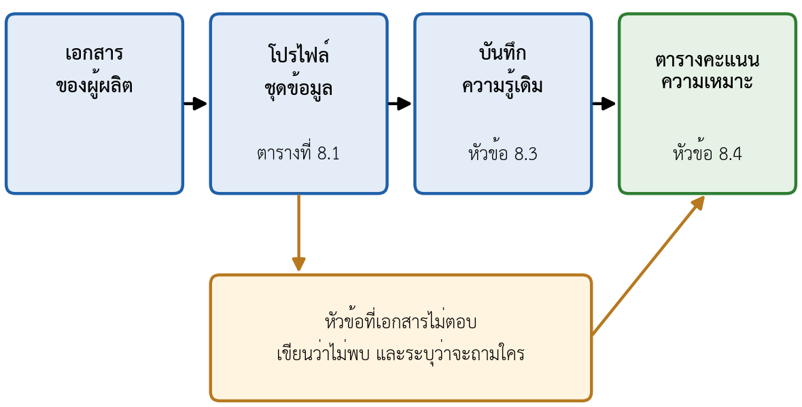
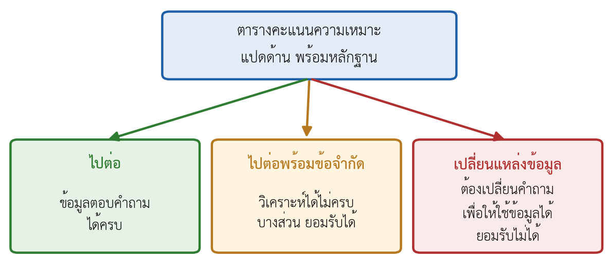

บทที่ 8 สำรวจและประเมินชุดข้อมูลทุติยภูมิ
เมื่อศึกษาบทนี้จบแล้ว นิสิตสามารถ
- อธิบายว่าเหตุใดความรู้เดิมเกี่ยวกับข้อมูลจึงต้องบันทึกก่อนวิเคราะห์ได้
- จัดทำโปรไฟล์ชุดข้อมูลจากเอกสารของผู้ผลิตข้อมูลได้
- จัดทำบันทึกความรู้เดิมที่ตอบข้อ 17 และข้อ 18 ของแม่แบบลงทะเบียนได้
- ประเมินความเหมาะของชุดข้อมูลกับคำถามวิจัยด้วยตารางคะแนนพร้อมหลักฐานรายด้านได้
- จัดทำตารางตัวแปรที่ใช้จากเอกสารประกอบชุดข้อมูลได้ (ใบงานที่ 8)
ความนำ
นิสิตแทร็กข้อมูลปฐมภูมิได้ข้อมูลหลังจากออกแบบเสร็จ นิสิตแทร็กข้อมูลทุติยภูมิมีข้อมูลอยู่แล้วตั้งแต่ก่อนออกแบบ ความต่างนี้ทำให้ความเสี่ยงของสองแทร็กต่างกัน ความเสี่ยงหลักของแทร็กนี้ไม่ใช่การเก็บข้อมูล แต่คือการที่ผู้วิจัยเห็นข้อมูลก่อนตั้งสมมติฐานได้ง่าย และใช้ข้อมูลที่เก็บมาเพื่อจุดประสงค์อื่นโดยไม่รู้ข้อจำกัดของมัน
บทนี้ให้นิสิตรู้จักชุดข้อมูลจากเอกสาร ไม่ใช่จากการวิเคราะห์ เริ่มจากโปรไฟล์ของชุดข้อมูล บันทึกว่าตนเคยเห็นอะไรไปแล้ว ประเมินว่าชุดข้อมูลตอบคำถามวิจัยได้จริงหรือไม่ แล้วจึงอ่านเอกสารประกอบเพื่อรู้ความหมายของทุกตัวแปรที่จะใช้ ผลของบทนี้ตอบข้อ 5 ถึงข้อ 13 และข้อ 17 ถึงข้อ 18 ของแม่แบบลงทะเบียนสำหรับข้อมูลเดิมในบทที่ 3
นิสิตแทร็กข้อมูลปฐมภูมิไม่ต้องทำใบงานบทนี้ แต่หัวข้อ 8.5 ใช้ได้กับการทำคู่มือรหัสข้อมูลของตนในบทที่ 7
8.1 รู้จักชุดข้อมูลจากเอกสารก่อนวิเคราะห์
Hox และ Boeije (2005, p. 593) นิยามข้อมูลทุติยภูมิ (secondary data) ว่าเป็นข้อมูลที่เก็บเพื่อจุดประสงค์อื่นแล้วนำมาใช้ตอบคำถามวิจัยอื่น ข้อดีคือต้นทุนต่ำกว่ามากและเข้าถึงได้เร็วกว่า ข้อเสียคือข้อมูลอาจไม่เหมาะกับปัญหาวิจัย เพราะเก็บเพื่อจุดประสงค์อื่น (Hox & Boeije, 2005, p. 594)
ความเสี่ยงที่สองมาจากความรู้เดิม Van den Akker และคณะ (2021, p. 1) อธิบายว่าความรู้เดิมเกี่ยวกับข้อมูลอาจทำให้สมมติฐานและการวิเคราะห์มีอคติ นี่คือเหตุผลที่บทที่ 3 ให้การวิเคราะห์ข้อมูลเดิมต้องลงทะเบียนด้วย ผู้เขียนเสนอหลักปฏิบัติสำหรับบทนี้ว่า ทุกสิ่งที่รู้ได้จากเอกสาร ให้รู้จากเอกสาร ไม่ใช่จากการเปิดไฟล์ข้อมูลดู เพราะการเปิดดูคือการสร้างความรู้เดิมเพิ่ม
8.2 โปรไฟล์ชุดข้อมูล
Hox และ Boeije (2005, p. 597) ชี้ว่าข้อมูลเกี่ยวกับวิธีเก็บข้อมูลเดิมจำเป็นต่อการประเมินคุณภาพข้อมูลทุติยภูมิ และกำหนดข้อมูลประกอบขั้นต่ำไว้ ได้แก่ จุดประสงค์ของการศึกษา นิยามเชิงปฏิบัติการ รายละเอียดการเก็บว่าใครเก็บ เมื่อไร ที่ไหน หน่วยที่ศึกษาและเกณฑ์การสุ่ม และอคติที่ทราบ (Hox & Boeije, 2005, p. 598) ผู้เขียนเสนอให้นิสิตรวมข้อมูลเหล่านี้กับข้อ 5 ถึงข้อ 9 ของแม่แบบลงทะเบียน (Van den Akker et al., 2021, pp. 4–5) เป็นโปรไฟล์ชุดข้อมูลตามตารางที่ 8.1
ตารางที่ 8.1 โปรไฟล์ชุดข้อมูล (ผู้เขียนเสนอ)
| หัวข้อ | สิ่งที่ต้องเขียน | ที่มาของหัวข้อ |
|---|---|---|
| ชื่อและฉบับ | ชื่อชุดข้อมูล ผู้ผลิต ฉบับหรือวันที่ปรับปรุงล่าสุด | Van den Akker et al. (2021, pp. 4–5) |
| การเข้าถึง | วิธีเข้าถึง วันดาวน์โหลด ข้อตกลงการใช้ | Van den Akker et al. (2021, pp. 4–5) และบทที่ 6 |
| จุดประสงค์เดิม | ผู้ผลิตเก็บข้อมูลเพื่ออะไร | Hox and Boeije (2005, p. 598) |
| วิธีเก็บ | ใครเก็บ เมื่อไร ที่ไหน ด้วยวิธีใด | Hox and Boeije (2005, p. 598) |
| หน่วยและการสุ่ม | หน่วยที่ศึกษา เกณฑ์คัดเข้า วิธีสุ่ม | Hox and Boeije (2005, p. 598) |
| ขนาดและช่วงเวลา | จำนวนแถว จำนวนหน่วย ช่วงเวลาที่ครอบคลุม | ผู้เขียนเสนอ |
| อคติที่ทราบ | ข้อจำกัดที่ผู้ผลิตระบุไว้เอง | Hox and Boeije (2005, p. 598) |
ที่มา ผู้เขียนเสนอ รวมหัวข้อจาก Hox and Boeije (2005) และ Van den Akker et al. (2021)
ทุกหัวข้อในตารางนี้ตอบได้จากเอกสารของผู้ผลิต ถ้าเอกสารไม่ตอบหัวข้อใด ให้เขียนว่าไม่พบ และระบุว่าจะถามใคร หัวข้อที่ไม่มีคำตอบเป็นข้อมูลสำคัญสำหรับหัวข้อ 8.4
ภาพที่ 8.1 แสดงว่าโปรไฟล์ชุดข้อมูลเป็นจุดเริ่มของงานในบทนี้ และหัวข้อที่เอกสารไม่ตอบส่งต่อไปถึงตารางคะแนนความเหมาะ

ที่มา ผู้เขียนเสนอ
8.3 บันทึกความรู้เดิม
แม่แบบลงทะเบียนของ Van den Akker และคณะ (2021, pp. 11–12) มีข้อ 17 และข้อ 18 ไว้ให้เปิดเผยงานที่ตนเคยตีพิมพ์จากข้อมูลชุดนี้ และความรู้เดิมที่มีต่อข้อมูล ผู้เขียนเสนอให้นิสิตเขียนบันทึกความรู้เดิม (prior knowledge log) เป็นตาราง มีวันที่ สิ่งที่ทำกับข้อมูล ตัวแปรที่เห็น และสิ่งที่สังเกตได้ ตัวอย่างรายการเช่น วันที่ดาวน์โหลด ตัวแปรที่เคยเปิดดูค่า ตารางหรือกราฟที่เคยทำ และบทความหรือรายงานที่เคยอ่านซึ่งใช้ข้อมูลชุดเดียวกัน
บันทึกนี้ต้องเขียนก่อนเริ่มวิเคราะห์ใด ๆ และเพิ่มรายการทุกครั้งที่เปิดดูข้อมูลหลังจากนั้น ถ้านิสิตเคยเปิดข้อมูลไปแล้วโดยไม่ได้บันทึก ให้เขียนย้อนหลังตามที่จำได้ และระบุว่าเป็นบันทึกย้อนหลัง บทที่ 3 ได้กล่าวไว้ว่าการลงทะเบียนหลังเห็นข้อมูลบางส่วนยังมีประโยชน์ ถ้าบอกตามจริงว่าเห็นอะไรไปแล้ว บันทึกย้อนหลังที่ซื่อตรงจึงดีกว่าการเขียนว่าไม่เคยเห็นข้อมูล
8.4 ประเมินความเหมาะกับคำถามวิจัย
Hox และ Boeije (2005, p. 598) วางเกณฑ์ไว้ว่า ข้อจำกัดของข้อมูลที่ทำให้วิเคราะห์ได้ไม่ครบบางส่วนยอมรับได้ แต่ถ้าต้องเปลี่ยนคำถามวิจัยเพื่อให้ใช้ข้อมูลได้ ถือว่ายอมรับไม่ได้ ผู้เขียนเสนอให้นิสิตตัดสินด้วยตารางคะแนนความเหมาะ (fitness scorecard) ในตารางที่ 8.2 ก่อนลงแรงเตรียมข้อมูล แต่ละด้านต้องมีหลักฐานจากเอกสาร ไม่ใช่ความเห็น
ตารางที่ 8.2 ตารางคะแนนความเหมาะของชุดข้อมูล (ผู้เขียนเสนอ)
| ด้าน | คำถามที่ต้องตอบ | หลักฐาน |
|---|---|---|
| ความตรงของแนวคิด | ตัวแปรในชุดข้อมูลวัดแนวคิดตามนิยามในบทที่ 4 หรือเป็นเพียงตัวแทนหยาบ | คำถามต้นฉบับหรือนิยามในเอกสาร |
| หน่วยวิเคราะห์ | ตรงกับคำถามวิจัยหรือต้องรวมระดับตามบทที่ 2 | คู่มือชุดข้อมูล |
| ช่วงเวลา | ครอบคลุมช่วงที่คำถามต้องการ | คู่มือชุดข้อมูล |
| ตัวแปรกวน | ตัวแปรกวนในแผนภาพเชิงสาเหตุบทที่ 2 มีในชุดข้อมูลหรือไม่ | ตารางเทียบตัวแปรกับแผนภาพ |
| กลุ่มตัวอย่าง | ประชากรและวิธีสุ่มตรงกับขอบเขตที่ต้องการอ้างผล | รายงานวิธีการของผู้ผลิต |
| ขนาด | พอสำหรับการวิเคราะห์ที่วางไว้ | ตัวเลขจากเอกสาร |
| คุณภาพ | ข้อมูลสูญหายและการเปลี่ยนนิยามข้ามรอบ | คู่มือชุดข้อมูล |
| การเข้าถึง | ข้อตกลงการใช้ยอมให้ทำงานนี้และส่งออกผล | ตารางที่ 6.3 |
ที่มา ผู้เขียนเสนอ
ภาพที่ 8.2 แสดงข้อสรุปสามแบบที่ได้จากตารางคะแนน

ที่มา ผู้เขียนเสนอ ตามเกณฑ์ใน Hox and Boeije (2005, p. 598)
ข้อสรุปแบบที่สองต้องเขียนในแผนลงทะเบียนว่าสมมติฐานข้อใดทดสอบไม่ได้หรือทดสอบได้เพียงบางส่วน และเพราะอะไร ข้อสรุปแบบที่สามไม่ใช่ความล้มเหลว การรู้ว่าชุดข้อมูลไม่เหมาะก่อนเตรียมข้อมูลประหยัดเวลาได้มาก ข้อที่ต้องระวังคือการเลือกทางที่ง่ายกว่า คือแก้คำถามวิจัยให้ตรงกับตัวแปรที่มีโดยไม่บอกใคร ซึ่งเกณฑ์ข้างต้นถือว่ายอมรับไม่ได้
8.5 อ่านเอกสารประกอบชุดข้อมูล
คู่มือรหัสข้อมูล (codebook) คือเอกสารที่อธิบายตัวแปร ค่าที่เป็นไปได้ และตำแหน่งในไฟล์ข้อมูล (Hox & Boeije, 2005, p. 593) แม่แบบลงทะเบียนให้นิสิตตอบเรื่อง codebook ตัวแปรที่จัดกระทำ ตัวแปรที่วัด หน่วยการวิเคราะห์ และเกณฑ์คัดเข้า ในข้อ 10 ถึงข้อ 13 (Van den Akker et al., 2021, pp. 6–8) ผู้เขียนเสนอให้นิสิตทำตารางตัวแปรที่ใช้ตามตารางที่ 8.3 สำหรับทุกตัวแปรในแผนภาพเชิงสาเหตุ
ตารางที่ 8.3 ตารางตัวแปรที่ใช้ (ผู้เขียนเสนอ)
| คอลัมน์ | ความหมาย |
|---|---|
| ชื่อตัวแปรในไฟล์ | ชื่อตามที่ปรากฏในไฟล์ข้อมูล |
| แนวคิดที่แทน | แนวคิดในแผนภาพเชิงสาเหตุที่ตัวแปรนี้แทน |
| นิยามหรือคำถามต้นฉบับ | ตามเอกสารของผู้ผลิต พร้อมเลขหน้า |
| ป้ายค่าและหน่วย | ค่าแต่ละค่าหมายถึงอะไร หน่วยวัดคืออะไร |
| รหัสข้อมูลสูญหาย | รหัสที่ใช้แทนข้อมูลสูญหาย และความหมายของช่องว่าง |
| นิยามที่เปลี่ยนข้ามรอบ | ปีหรือรอบที่นิยามหรือการจัดกลุ่มเปลี่ยน |
| น้ำหนักถ่วง | ตัวแปรน้ำหนักถ่วงที่เกี่ยวข้อง ถ้ามี |
ที่มา ผู้เขียนเสนอ ตามข้อ 10 ถึงข้อ 13 ใน Van den Akker et al. (2021, pp. 6–8)
สามคอลัมน์สุดท้ายเป็นจุดที่ผิดบ่อยที่สุด คอลัมน์รหัสข้อมูลสูญหายป้องกันการนับรหัส เช่น 99 หรือ -9 เป็นค่าจริง และป้องกันการตีความช่องว่างผิด คอลัมน์นิยามที่เปลี่ยนข้ามรอบสำคัญเพราะความต่างเล็กน้อยของนิยาม การจัดประเภท และแนวคิดระหว่างการศึกษามีผลต่อการนำข้อมูลกลับมาใช้ (Hox & Boeije, 2005, p. 598) ผู้วิเคราะห์ใหม่ยังควรรู้ว่าผู้ผลิตแก้ไขและลงรหัสข้อมูลดิบเดิมอย่างไร ถ้าไม่มีเมทาดาตาเรื่องนี้ จะประเมินความเที่ยงและความตรงของวิธีเดิมไม่ได้ (Hox & Boeije, 2005, p. 598) ส่วนน้ำหนักถ่วง แม่แบบลงทะเบียนให้ระบุการใช้น้ำหนักตัวอย่างไว้ในข้อ 16 (Van den Akker et al., 2021, pp. 9–11) ส่วนจะใช้น้ำหนักหรือไม่ Solon และคณะ (2015) ให้เริ่มจากคำถามว่ากำลังประมาณค่าอะไร ถ้าเป็นค่าสถิติพรรณนาของประชากร เช่น สัดส่วนหรือค่าเฉลี่ย ให้ใช้น้ำหนัก ถ้าเป็นผลเชิงสาเหตุ เหตุผลของการใช้น้ำหนักมีสามข้อ คือ ความแปรปรวนไม่คงที่ (heteroskedasticity) การสุ่มตัวอย่างที่ขึ้นกับตัวแปรตาม (endogenous sampling) และผลที่ต่างกันระหว่างกลุ่ม (heterogeneous effects) และแนะนำให้รายงานผลทั้งแบบใช้และไม่ใช้น้ำหนัก
ถ้าเอกสารไม่ตอบคอลัมน์ใด ห้ามเดาจากชื่อคอลัมน์หรือจากการเปิดดูค่า ให้เขียนว่าเอกสารไม่ระบุ แล้วถามผู้ผลิตหรือผู้ดูแลข้อมูล ถ้าไม่ได้คำตอบ ให้ตัดสินในแผนลงทะเบียนว่าจะถือความหมายใด และวางแผนวิเคราะห์ความทนทานด้วยความหมายอื่นในบทที่ 9
8.6 ข้อผิดพลาดที่พบบ่อย
ตารางที่ 8.4 ข้อผิดพลาดที่พบบ่อยและวิธีแก้
| ข้อผิดพลาด | ตัวอย่าง | วิธีแก้ |
|---|---|---|
| ตั้งคำถามวิจัยจากตัวแปรที่สัมพันธ์กันในชุดข้อมูล | เปิดตารางสหสัมพันธ์แล้วเลือกคู่ที่สูง | เริ่มจากแผนภาพเชิงสาเหตุในบทที่ 2 และบันทึกความรู้เดิม |
| ไม่บันทึกความรู้เดิม หรือเขียนว่าไม่เคยเห็นข้อมูล | ข้อ 18 ของแม่แบบว่างเปล่า | เขียนบันทึก ย้อนหลังได้ถ้าระบุว่าย้อนหลัง (Van den Akker et al., 2021, pp. 11–12) |
| แก้คำถามวิจัยให้ตรงกับตัวแปรที่มี | เปลี่ยนแนวคิดเป็นตัวแปรที่หาได้โดยไม่บอก | ใช้เกณฑ์ใน Hox and Boeije (2005, p. 598) |
| เดาความหมายของตัวแปรจากชื่อคอลัมน์ | ถือว่าคอลัมน์ RD คือค่าใช้จ่ายวิจัยและพัฒนาทั้งหมด | อ่านนิยามในเอกสารพร้อมเลขหน้า |
| นับรหัสข้อมูลสูญหายเป็นค่าจริง | ค่า 99 ถูกนำไปคำนวณค่าเฉลี่ย | กรอกคอลัมน์รหัสข้อมูลสูญหายในตารางที่ 8.3 |
| ไม่ตรวจนิยามที่เปลี่ยนข้ามรอบ | ใช้รหัสอุตสาหกรรมสองระบบเป็นตัวแปรเดียว | กรอกคอลัมน์นิยามที่เปลี่ยนข้ามรอบ (Hox & Boeije, 2005, p. 598) |
ฐานข้อมูลของธามครอบคลุมบริษัทจดทะเบียนประมาณ 600 บริษัท ข้อมูลรายปีย้อนหลัง 10 ปี ค่าใช้จ่ายวิจัยและพัฒนาเป็นช่องว่างในข้อมูลบริษัทรายปีจำนวนมาก และเอกสารประกอบฐานข้อมูลไม่ได้บอกว่าช่องว่างหมายถึงศูนย์หรือไม่ได้เปิดเผย
รหัสอุตสาหกรรมในฐานข้อมูลเปลี่ยนระบบการจัดกลุ่มในช่วงกลางของช่วงเวลาที่ศึกษา และธามไม่ได้บันทึกว่าเคยดูตัวแปรใดไปแล้วบ้างตอนเปิดข้อมูลในบทที่ 1
คำถามชวนคิด ธามควรเขียนบันทึกความรู้เดิมอย่างไร ช่องว่างของค่าใช้จ่ายวิจัยและพัฒนาและรหัสอุตสาหกรรมที่เปลี่ยนระบบควรเขียนในตารางที่ 8.3 อย่างไร และสองเรื่องนี้ทำให้ตารางคะแนนความเหมาะด้านใดน่ากังวล ข้อสรุปของธามควรเป็นแบบใดในภาพที่ 8.2
เมื่อศึกษาบทนี้แล้ว นิสิตสามารถอธิบายว่าข้อมูลทุติยภูมิเก็บเพื่อจุดประสงค์อื่น จึงอาจไม่เหมาะกับปัญหาวิจัย และความรู้เดิมเกี่ยวกับข้อมูลอาจทำให้สมมติฐานและการวิเคราะห์มีอคติ นิสิตจึงรู้จักชุดข้อมูลจากเอกสารก่อนเปิดไฟล์ จัดทำโปรไฟล์ชุดข้อมูล และบันทึกความรู้เดิมตามจริง แม้ต้องเขียนย้อนหลัง
นิสิตประเมินความเหมาะของชุดข้อมูลด้วยตารางคะแนนที่มีหลักฐานรายด้าน และใช้เกณฑ์ว่าข้อจำกัดที่ทำให้วิเคราะห์ได้ไม่ครบบางส่วนยอมรับได้ แต่การเปลี่ยนคำถามวิจัยเพื่อให้ใช้ข้อมูลได้ยอมรับไม่ได้ นิสิตจัดทำตารางตัวแปรที่ใช้จากเอกสารประกอบ โดยเฉพาะรหัสข้อมูลสูญหายและนิยามที่เปลี่ยนข้ามรอบ
ผลของใบงานที่ 8 คือความรู้เกี่ยวกับชุดข้อมูลที่พร้อมใช้เตรียมข้อมูล บทที่ 9 นำตารางตัวแปรที่ใช้ไปตรวจคุณภาพข้อมูล เขียนโค้ดเตรียมข้อมูลที่ทำซ้ำได้ และตรวจว่าทางเลือกในการเตรียมข้อมูลเปลี่ยนผลหรือไม่
- ข้อมูลทุติยภูมิ (secondary data)
- โปรไฟล์ชุดข้อมูล (dataset profile)
- บันทึกความรู้เดิม (prior knowledge log)
- ตารางคะแนนความเหมาะ (fitness scorecard)
- คู่มือรหัสข้อมูล (codebook)
- ป้ายค่า (value label)
- รหัสข้อมูลสูญหาย (missing value code)
- น้ำหนักถ่วง (weight)
- เมทาดาตา (metadata)
คำถามทบทวน
- จงอธิบายว่าเหตุใดการเปิดไฟล์ข้อมูลดูเพื่อทำความรู้จักชุดข้อมูลจึงเป็นความเสี่ยง และนิสิตควรรู้จักชุดข้อมูลด้วยวิธีใดแทน
- นิสิตคนหนึ่งเปิดข้อมูลดูมาแล้วหลายเดือนโดยไม่ได้บันทึก จงเสนอวิธีเขียนบันทึกความรู้เดิมที่ซื่อตรงและยังมีประโยชน์
- ชุดข้อมูลของนิสิตไม่มีตัวแปรกวนสำคัญหนึ่งตัวในแผนภาพเชิงสาเหตุ จงใช้เกณฑ์ของ Hox และ Boeije (2005) ตัดสินว่านิสิตควรสรุปแบบใดในภาพที่ 8.2 และควรเขียนอะไรในแผนลงทะเบียน
- จงอธิบายด้วยตัวอย่างว่าการไม่ตรวจนิยามที่เปลี่ยนข้ามรอบส่งผลต่อผลการวิเคราะห์อย่างไร
- เอกสารประกอบชุดข้อมูลไม่บอกว่าช่องว่างในตัวแปรหลักหมายถึงอะไร จงเสนอขั้นตอนที่นิสิตควรทำ ตั้งแต่ก่อนตัดสินจนถึงการวิเคราะห์
ใบงานที่ 8 โปรไฟล์และความเหมาะของชุดข้อมูล
ให้นิสิตแทร็กข้อมูลทุติยภูมิจัดทำเอกสารสำหรับโครงการวิจัยของตนเอง
- บันทึกความรู้เดิม พร้อมวันที่ ระบุรายการที่เขียนย้อนหลัง
- โปรไฟล์ชุดข้อมูลตามตารางที่ 8.1 ระบุเลขหน้าของเอกสารทุกหัวข้อ
- ตารางคะแนนความเหมาะตามตารางที่ 8.2 พร้อมหลักฐานรายด้าน และข้อสรุปตามภาพที่ 8.2
- ตารางตัวแปรที่ใช้ตามตารางที่ 8.3 ครบทุกตัวแปรในแผนภาพเชิงสาเหตุ
- รายการคำถามที่เอกสารไม่ตอบ พร้อมผู้ที่จะถามและสิ่งที่จะตัดสินถ้าไม่ได้คำตอบ
- ปรับข้อ 5 ถึงข้อ 13 และข้อ 17 ถึงข้อ 18 ของแผนลงทะเบียนให้ตรงกับใบงานนี้ และบันทึกในบันทึกการแก้แผน
เอกสารอ้างอิง
วราวุฒิ นาคบุญนำ. (2569). บทที่ 8 สำรวจและประเมินชุดข้อมูลทุติยภูมิ. ใน เริ่มต้นทำวิจัย จากคำถามถึงชุดข้อมูลที่วิเคราะห์ได้. คณะการบัญชีและการจัดการ มหาวิทยาลัยมหาสารคาม. https://aj-warawut.github.io/academic-web-teaching/rs_lesson_08.html